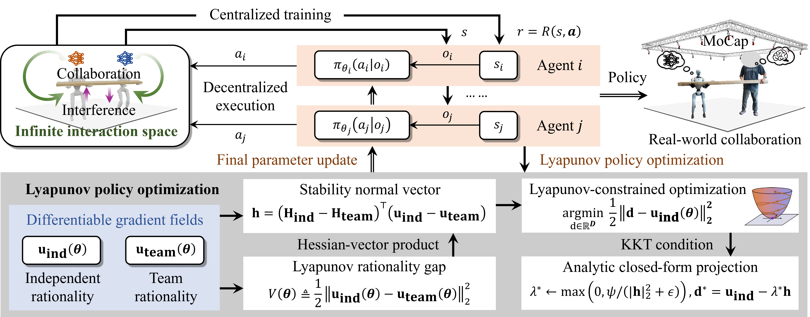
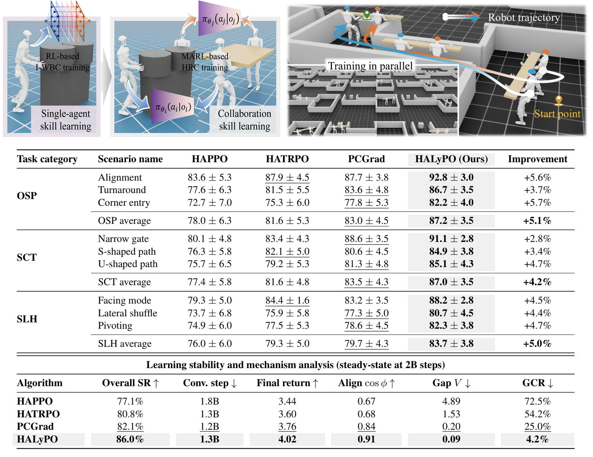

Methodology & Framework

Figure 1: Overview of the HALYPO Framework. The architecture illustrates how heterogeneous agents (Human Proxy and Robot) interact within a decentralized environment. HALYPO introduces a Lyapunov-based projection layer that rectifies decentralized gradients, ensuring stable convergence towards the cooperative Nash equilibrium even under highly stochastic human behaviors.

Figure 2: Parameter-Space Stability Analysis. Comparison of learning dynamics between standard IPPO and HALYPO. While independent updates often lead to oscillations in the Rationality Gap (RG), our Lyapunov descent condition forces a monotonic decrease in policy disagreement, leading to smoother and faster convergence in complex differentiable games.

Figure 3: Heterogeneous Multi-Agent Simulation Environments. We evaluated HALYPO across various challenging HRC scenarios, including collaborative transport and dynamic obstacle avoidance. The diverse set of tasks tests the agent's ability to generalize to unseen human motion patterns and dynamical perturbations.

Figure 4: Quantitative Performance Metrics. HALYPO consistently outperforms baselines in terms of success rate and efficiency. The results highlight the importance of formal stability certification in stabilizing the learning process for heterogeneous multi-agent systems.